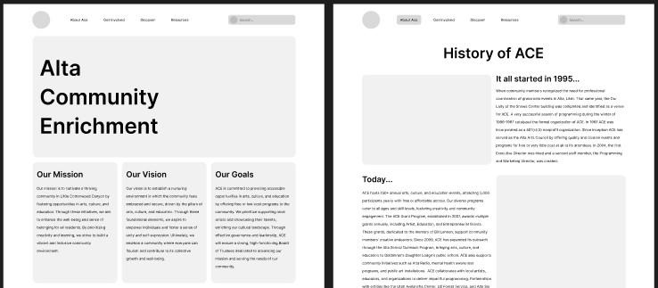
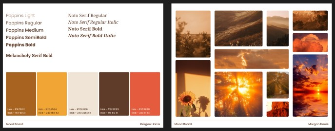

I had a semester long project for my Interaction Design Essentials class. This project consisted of choosing a non-profit organization based here in Utah, and then redesigning their website. The organization that I chose was Alta Community Center, or ACE. I had to redesign this website for not only desktop, but for tablet and mobile as well. My goal for the project was to make the design cohesive between all of the platforms and also make the site much easier to understand and navigate. The redesign was tailored for Alta Community Enrichment, which is an organization that promotes engagement among the community. I was the sole designer for this project, so I was responsible for site-mapping and sketching, as well as creating wireframes, developing a mood board, building a pattern library, and designing high-fidelity surface comps.
I began the project by developing a sitemap. The main purpose of this was so that I could get a general sense of the structure of the website. This included categorizing some of the related pages under dropdowns for the navigation bar. I was also able to determine which pages were necessary, which could be removed or combined, and what the content would look like on each of the pages. Although the sitemap evolved slightly throughout the course of the project, the general layout remained mostly the same.
After finalizing the sitemap, I was able to move onto the sketches. With these I was able to visualize the general appearance of the site. Since one of the main requirements for this project was to have five main pages, I concentrated on designing for the pages that would be the most important. I was able to get to work on the wireframes after completing the sketches. This step allowed me to get a more definitive sense of what the different pages would look like, what would go on each page, and where these things would go. Since this was my first larger-scale UX project, it took extra time to go through and design everything. There was definitely a bit of a learning curve. The main things that I wanted to achieve here was simplifying the navigation and fixing any inconsistencies with different elements spacing and sizes.
Following the wireframes, I developed mood boards to guide the aesthetic direction of the website. This involved selecting a color palette, choosing a few different fonts, and gathering some imagery that aligned with the tone that I wanted to establish. I also researched existing websites with a similar feel to what I was trying to accomplish. The goal was to create a warm and welcoming atmosphere that aligned with ACE’s already existing color palette of reds, orangey-yellow, and some brown tones, while also drawing from the mountainous landscape of Alta.
Next was the pattern library. This allowed me to reuse certain design elements throughout the main site to maintain consistency. I also refined the logo as a part of this step. The original logo somewhat resembled a snowflake, although it also resembles a flower to me as well because of the use of red and yellow. I modified the logo to update it a little bit, but I kept the original snowflake. I also snuck a flower in the middle of the snowflake too, to keep the same feeling that I got initially.